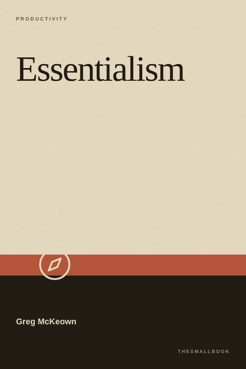

Library › Ask the Library › How do I balance work and life?
How do I balance work and life?
The short answer
Balance is not equal hours, it's deliberate allocation. Protect non-negotiables (sleep, family, movement) like meetings, and batch work into deep blocks so it doesn't leak into everything. The goal isn't perfect balance; it's being fully present where you are. Boundaries are the only real tool.
The books behind the answer

Essentialism
Greg McKeown · 2014 · 8 min · 6 lessons
Almost everything is noise. The Essentialist explores widely, eliminates ruthlessly, and executes effortlessly on the vital few.
- The Disciplined Pursuit of Less: Say no to the good so you can say yes to the essential.

Four Thousand Weeks
Oliver Burkeman · 2021 · 8 min · 6 lessons
Productivity is a trap: clearing the decks just refills them faster. Freedom begins when you accept you'll never get it all done - and choose deliberately.
- Accept Your Finitude: You can't do it all, choosing what to neglect is the real skill.

The Power of Full Engagement
Jim Loehr & Tony Schwartz · 2003 · 8 min · 6 lessons
Time is fixed, energy is not. Manage your energy like an athlete - full engagement, full recovery - and performance follows.
- Manage Energy, Not Time: Sprint and recover, oscillation is the secret, not extension.
Questions people ask next
Can I read this in Hindi?
Yes. This answer is written in simple English. Open any linked book and choose Hindi or Hinglish to read the full lessons in your language, with audio where available.